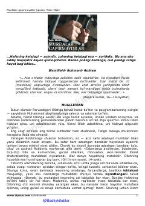

MGNafs va xiyonat qurboni bo'lgan insonlarning ayanchli taqdiri haqidagi ijtimoiy-psixologik qissa.
Ushbu asar insoniy nafs, xiyonat va uning ayanchli oqibatlari haqida hikoya qiladi. Muallif adashgan bandalar hayoti misolida dunyo matohlariga berilib, o'zligini yo'qotgan insonlarning fojiali taqdirini tahlil qiladi.